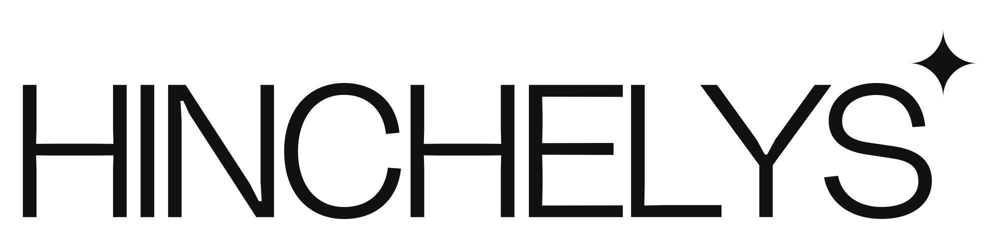

Et designsystem til HINCHELYS-platformen.
Tokens, typografi, motivskomponenter og indholdsregler — bygget til at fodre Claude i VS Code, så websitet kan udvikles direkte herfra. Brandbogens fundament er bevaret. Sproget kommer fra Tobias's LinkedIn.
01 · Manifest
Filer at læse først
MarkdownREADME.mdBrand, voice, visual foundations. Start her.
Markdownweb/patterns.mdSektion-for-sektion designspecs for sitet.
CSScolors_and_type.cssAlle tokens som CSS custom properties.
MarkdownSKILL.mdAgent Skill-manifest til Claude Code.
JSXweb/components/14 referencekomponenter med inline-styles.
PDFassets/brandbook.pdfOriginal 12-siders brandbog.
02 · Farver
Fire farver. Tre opgaver.
Jet Black
#111111 · ink
Alabaster
#F3F3F3 · bg
Concrete
#B6B6B6 · alt
Aureolin
#F1EB2F · accent
03 · Typografi
EB Garamond. Hanken Grotesk. Stort tracking.
Vi er iværksættere fra Sønderjylland.
Tre virksomheder. En adresse.
Tobias og Julie Silverstein Hinchely driver Den Sidste Flaske, Bistro Neuf og Det Sidste Bureau fra Sønderjylland. 250.000+ kunder, tre lande, snart 50 ansatte. De holder foredrag om iværksætteri og sidder i bestyrelser.
Book foredrag →
04 · Knapper
To stilarter. Tre størrelser.
05 · Stemme
Sønderjysk, direkte, autentisk.
★
Dygtige hænder er ikke plan B. De er fundamentet.
Tobias Hinchely · LinkedIn, Marts 2026